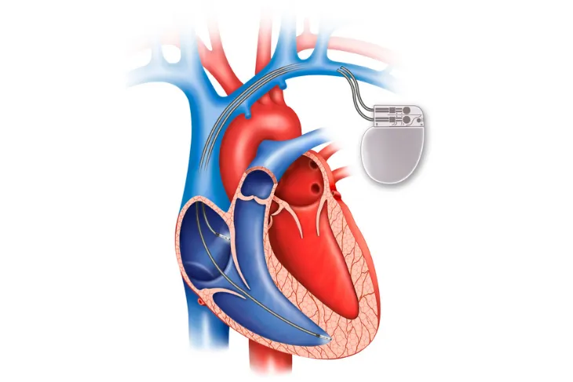

A Complete Guide to Living With a Pacemaker

If you suffer from arrhythmia ( irregular heartbeat ), your doctor may recommend a pacemaker. This electrically charged device can help your heart function as it should, so your body can get enough blood. Pacemakers can help treat two types of arrhythmia, including a heartbeat that’s too fast (tachycardia) or too slow (bradycardia).
If you recently had a pacemaker implantation surgery or have been put on the path to receive one, there are some things you’ll need to be cautious of. The good news is, you can live a pretty normal life with a pacemaker but you’ll need to be cautious of some electronic devices as they can interfere with your device. In our complete guide to living with a pacemaker, we’ll uncover what to expect after surgery and things to avoid with a pacemaker.
What to Expect After a Pacemaker Implantation Surgery
A pacemaker implantation surgery is fairly invasive and straightforward. It also only takes a couple of hours. But what can you expect after pacemaker implantation?
First, your doctor may allow you to go home in the evening or they may keep you overnight. But before you leave, your doctor will ensure your pacemaker is programmed specifically for your needs. During your follow-up appointments, your doctor can also check on your pacemaker and reprogram it, if needed.
Things to Avoid With a Pacemaker
First, your doctor will advise you to avoid heavy lifting and any rigorous activities for the next month. You may also need over-the-counter medications to help ease any discomfort you may feel. Make sure you talk with your doctor to find out what medications you can take, and what type of activities you can participate in.
While you heal from the surgery, it’s important to read up on things you’ll now need to avoid with a pacemaker. The good news is modern pacemakers aren’t as sensitive as the old devices, but certain devices may still interfere with your pacemaker. Let’s take a look at these next.
Keep in mind, your doctor will also give you comprehensive instructions to help you minimize your risks.
Cell Phones
Most cell phones in the U.S. (that are less than 3-watts) are mostly safe to use. But with technology always changing, some wireless frequencies may make your pacemaker less reliable.
While this is still being investigated, the general rule of thumb is to always keep cell phones at least 6-inches away from your pacemaker. You should also avoid carrying a cell phone in a chest pocket that is directly over the pacemaker.
Airport Security
Going through airport security isn’t something you should worry about. Metal detectors are not likely to significantly impact your device. That said, Heart.org recommends not standing near the detectors for longer than necessary and don’t lean on the structure of the system.
Furthermore, your device may set off a metal detector. With that in mind, be sure to inform the security personnel that you have a pacemaker. You can also find more information about traveling through the airport with a pacemaker on the Transportation Security Administration (TSA) advisory page.
Magnets
Magnets and magnetic fields from devices or machines can interfere with your pacemaker. While it’s not always possible to tell if a machine contains a magnet, it’s better to be cautious. If you ever feel any interference make sure you move away from the device/machine.
Furthermore, make sure you avoid magnetic jewelry, mattress pads, and pillows as these can interfere with your pacemaker. As a general rule, you should steer clear of magnets.
Anti-Theft Systems
Anti-theft systems, such as the devices found near the front of department stores, probably won’t interfere with your pacemaker. That said, it’s always best to err on the side of caution.
With this in mind, don’t lean against emergency alert systems (EASs) and don’t linger near them for long periods of time. Keep in mind, they’re not always visible but they’re typically located near the exit of a retailer.
Headphones
Individuals with pacemakers need to be cautious of headphones and earbuds. Most headphones contain magnetic materials that convert audio signals into sound . As we already know, magnets can interfere with your device.
It’s best to keep headphones at least 6-inches away from your pacemaker, and you shouldn’t carry headphones in your chest pocket or drape them around your neck. Also, you should be cautious of family members wearing headphones and don’t allow someone wearing headphones to rest their head on your chest.
Ignition Systems
The ignition systems of gas-powered engines may cause interference with your device. It would be best to stay away (at least 12-inches) from the ignition systems of vehicles or other gas-powered equipment.
The good news is you can still drive a car because the ignition system is far enough away from the car seats. That said, after having pacemaker implantation surgery, you’ll need to find out from your doctor when it’s appropriate to drive your car again.
Medical Procedures to Avoid With a Pacemaker
Individuals with a pacemaker may need to avoid certain medical procedures, as they may interfere with their device. Heart.org lists the following medical procedures that may pose a risk:
- Extracorporeal shock-wave lithotripsy (ESWL)
- Magnetic resonance imaging (MRI)
- Radiofrequency ablation (RFA)
- Therapeutic radiation
- Computed tomography (CT )
- Electrocauterization
- Transcutaneous electrical nerve stimulation (TENS)
- High-frequency, short-wave, or microwave diathermy
Some of these procedures can be used with caution while others shouldn’t be used at all. If you require any of these above procedures, your doctor will be able to weigh your options and determine what course of action is best for you.
Do Daily Activities Change With a Pacemaker?
The good news is, for the most part, life with a pacemaker should feel normal. You can still engage in normal daily activities, such as gardening, housework, taking a shower, and more.
Activity levels are usually only limited while the incision is healing but make sure you get exercise advice from your doctor. You can also drive your car and travel once you’ve been cleared by your doctor. If you ever have any questions or concerns about living with a pacemaker, make sure you book an appointment with your doctor to discuss it with them. Your doctor will be able to advise what is and isn’t safe for you.
Source: https://activebeat.com/your-health/a-complete-guide-to-living-with-a-pacemaker/